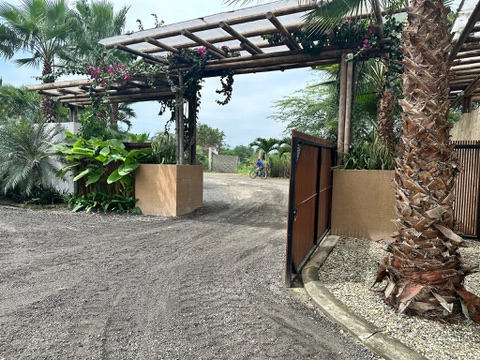

Written from the town
Ayampe Guides
Everything you need to plan your trip to Ecuador's coast: surf, whales, pristine beaches and the secrets of the quietest town on the Ruta del Spondylus.

The town
Things to do in Ayampe: the complete guide
Where it is, what to do, when to visit and where to stay in the quietest town on the Ruta del Spondylus.
Read the guide
Surf
Surfing Ayampe: waves, season & schools
A consistent, uncrowded beach break that works all year. Seasons, nearby spots and local tips.
Read the guide
Nature
Whale watching: season & tours
June to September, humpbacks arrive in Manabí. Tours from Puerto López and Isla de la Plata.
Read the guide
Beaches
Los Frailes: Ecuador's most beautiful beach
How to get there from Ayampe, the lookout trail and what to bring to Machalilla's pristine beach.
Read the guide
Investing
5 reasons to invest by the ocean in Ayampe
Built-in scarcity, growing rental demand and a community that protects the destination's value.
Read the guide